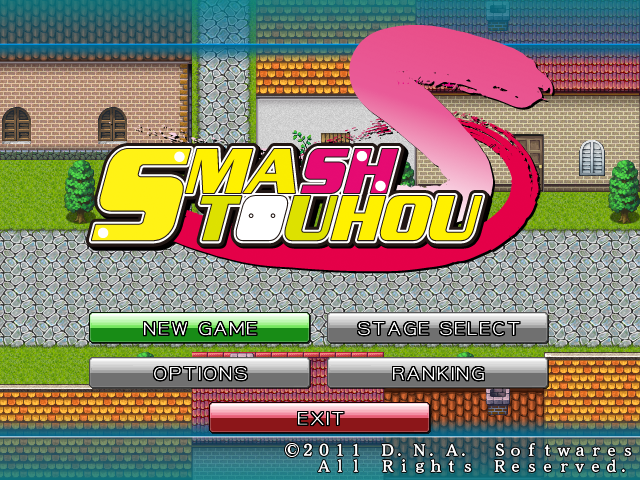
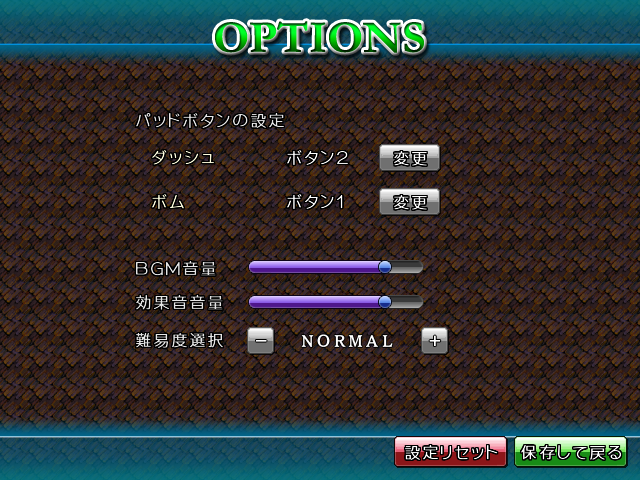
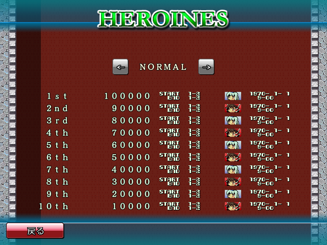
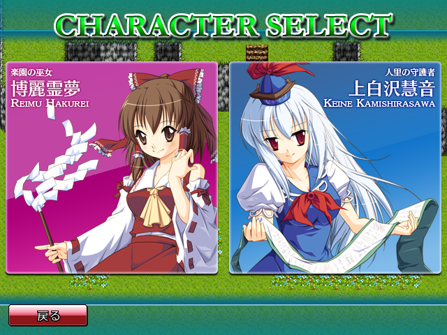
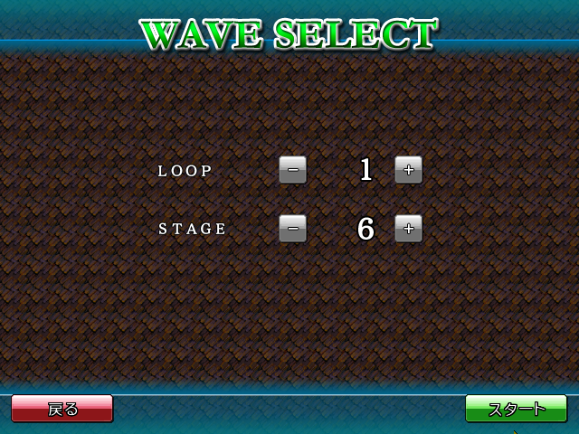

メニュー
本ゲームのメニュー類は全てマウスで操作します。
メインメニュー

全ての起点となるタイトル画面です。5つのボタンのどれかをマウスで選び、クリックします。
- NEW GAME …… 新しくゲームを開始します。キャラクタ選択後、WAVE 1からゲームを開始します。
- STAGE SELECT …… これまで到達したことのあるWAVEを自由に選択し、そこからゲームを開始します。
- OPTIONS …… 各種設定を行います。
- RANKING …… ランキングを閲覧します。
- EXIT …… SMASH TOUHOUを終了します。
オプション画面

ゲームパッドの設定や、音量調整を行います。難易度選択もここです。
難易度については5段階からの選択式です。詳しくは後述します。
ランキング画面

ハイスコアを閲覧できます。難易度別集計となっており、上のボタンで難易度を切り替えられます。ランキングの項目は「順位、スコア、開始WAVE(START)、到達WAVE(END)、使用したキャラ、スコアを記録した年月日と時刻」となっています。WAVEの表記は「(周回数)-(ステージ番号)」となっています。
キャラセレクト・ステージセレクト

自機選択画面です。自機の性能差は後述。使用したいキャラをクリックで決定します。

STAGE SELECTの場合はこの画面にうつります。LOOPは周回数、STAGEはステージを指定。それぞれ＋と－で1つずつ増減できます。到達したステージより先は選べません。右下「スタート」で開始です。